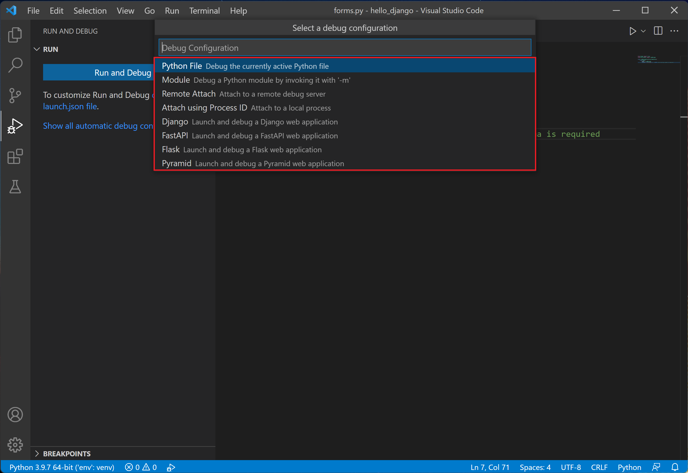

Python debugging in VS Code
The Python extension supports debugging of several types of Python applications. For a short walkthrough of basic debugging, see Tutorial - Configure and run the debugger. Also see the Flask tutorial. Both tutorials demonstrate core skills like setting breakpoints and stepping through code.
For general debugging features such as inspecting variables, setting breakpoints, and other activities that aren't language-dependent, review VS Code debugging.
This article mainly addresses Python-specific debugging configurations, including the necessary steps for specific app types and remote debugging.
Initialize configurations
A configuration drives VS Code's behavior during a debugging session. Configurations are defined in a launch.json file that's stored in a .vscode folder in your workspace.
Note: To change debugging configuration, your code must be stored in a folder.
To initialize debug configurations, first select the Run view in the sidebar:

If you don't yet have any configurations defined, you'll see a button to Run and Debug and a link to create a configuration (launch.json) file:

To generate a launch.json file with Python configurations, do the following steps:
-
Select the create a launch.json file link (outlined in the image above) or use the Run > Open configurations menu command.
-
A configuration menu will open from the Command Palette allowing you to choose the type of debug configuration you want for the opened file. For now, in the Select a debug configuration menu that appears, select Python File. 
Note: Starting a debugging session through the Debug Panel, F5 or Run > Start Debugging when no configuration exists will also bring up the debug configuration menu, but will not create a launch.json file.
-
The Python extension then creates and opens a
launch.jsonfile that contains a pre-defined configuration based on what you previously selected, in this case, Python File. You can modify configurations (to add arguments, for example), and also add custom configurations.
The details of configuration properties are covered later in this article under Standard configuration and options. Other configurations are also described in this article under Debugging specific app types.
Additional configurations
By default, VS Code shows only the most common configurations provided by the Python extension. You can select other configurations to include in launch.json by using the Add Configuration command shown in the list and the launch.json editor. When you use the command, VS Code prompts you with a list of all available configurations (be sure to select the Python option):

Selecting the Attach using Process ID one yields the following result:
See Debugging specific app types for details on all of these configurations.
During debugging, the Status Bar shows the current configuration and the current debugging interpreter. Selecting the configuration brings up a list from which you can choose a different configuration:

By default, the debugger uses the same interpreter selected for your workspace, just like other features of Python extension for VS Code. To use a different interpreter for debugging specifically, set the value for python in launch.json for the applicable debugger configuration. Alternately, select the named interpreter on the Status Bar to select a different one.
Basic debugging
If you're only interested in debugging a Python script, the simplest way is to select the down-arrow next to the run button on the editor and select Debug Python File in Terminal.
If you're looking to debug a web application using Flask, Django or FastAPI, the Python extension provides dynamically created debug configurations based on your project structure under the Show all automatic debug configurations option, through the Run and Debug view.

But if you're looking to debug other kinds of applications, you can start the debugger through the Run view by clicking on the Run and Debug button.

When no configuration has been set, you'll be given a list of debugging options. Here, you can select the appropriate option to quickly debug your code.
Two common options are to use the Python File configuration to run the currently open Python file or to use the Attach using Process ID configuration to attach the debugger to a process that is already running.
For information about creating and using debugging configurations, see the Initialize configurations and Additional configurations sections. Once a configuration is added, it can be selected from the dropdown list and started using the Start Debugging button.
Command line debugging
The debugger can also be run from the command line. The debugger command line syntax is as follows:
python -m debugpy
--listen | --connect
[<host>:]<port>
[--wait-for-client]
[--configure-<name> <value>]...
[--log-to <path>] [--log-to-stderr]
<filename> | -m <module> | -c <code> | --pid <pid>
[<arg>]...
As an example, from the command line, you could start the debugger using a specified port (5678) and script using the following syntax. This example assumes the script is long-running and omits the --wait-for-client flag, meaning that the script will not wait for the client to attach.
python -m debugpy --listen 5678 ./myscript.py
You would then use the following configuration to attach from the VS Code Python extension.
{
"name": "Python: Attach",
"type": "python",
"request": "attach",
"connect": {
"host": "localhost",
"port": 5678
}
}
Note: Specifying host is optional for listen, by default 127.0.0.1 is used.
If you wanted to debug remote code or code running in a docker container, on the remote machine or container, you would need to modify the previous CLI command to specify a host.
python -m debugpy --listen 0.0.0.0:5678 ./myscript.py
The associated configuration file would then look as follows.
{
"name": "Attach",
"type": "python",
"request": "attach",
"connect": {
"host": "remote-machine-name", // replace this with remote machine name
"port": 5678
}
}
Note: Be aware that when you specify a host value other than
127.0.0.1orlocalhostyou are opening a port to allow access from any machine, which carries security risks. You should make sure that you're taking appropriate security precautions, such as using SSH tunnels, when doing remote debugging.
| Flag | Options | Description |
|---|---|---|
| --listen or --connect | [<host>:]<port> |
Required. Specifies the host address and port for the debug adapter server to wait for incoming connections (--listen) or to connect with a client that is waiting for an incoming connection (--connect). This is the same address that is used in the VS Code debug configuration. By default, the host address is localhost (127.0.0.1). |
| --wait-for-client | none | Optional. Specifies that the code should not run until there's a connection from the debug server. This setting allows you to debug from the first line of your code. |
| --log-to | <path> |
Optional. Specifies a path to an existing directory for saving logs. |
| --log-to-stderr | none | Optional. Enables debugpy to write logs directly to stderr. |
| --pid | <pid> |
Optional. Specifies a process that is already running to inject the debug server into. |
| --configure-<name> | <value> |
Optional. Sets a debug property that must be known to the debug server before the client connects. Such properties can be used directly in launch configuration, but must be set in this manner for attach configurations. For example, if you don't want the debug server to automatically inject itself into subprocesses created by the process you're attaching to, use --configure-subProcess false. |
Note:
[<arg>]can be used to pass command-line arguments along to the app being launched.
Debugging by attaching over a network connection
Local script debugging
There may be instances where you need to debug a Python script that's invoked locally by another process. For example, you may be debugging a web server that runs different Python scripts for specific processing jobs. In such cases, you need to attach the VS Code debugger to the script once it's been launched:
-
Run VS Code, open the folder or workspace containing the script, and create a
launch.jsonfor that workspace if one doesn't exist already. -
In the script code, add the following and save the file:
import debugpy # 5678 is the default attach port in the VS Code debug configurations. Unless a host and port are specified, host defaults to 127.0.0.1 debugpy.listen(5678) print("Waiting for debugger attach") debugpy.wait_for_client() debugpy.breakpoint() print('break on this line') -
Open a terminal using Terminal: Create New Terminal, which activates the script's selected environment.
-
In the terminal, install the debugpy package with
python -m pip install --upgrade debugpy. -
In the terminal, start Python with the script, for example,
python3 myscript.py. You should see the "Waiting for debugger attach" message that's included in the code, and the script halts at thedebugpy.wait_for_client()call. -
Switch to the Run and Debug view (D (Windows, Linux Ctrl+Shift+D)), select the appropriate configuration from the debugger dropdown list, and start the debugger.
-
The debugger should stop on the
debugpy.breakpoint()call, from which point you can use the debugger normally. You also have the option of setting other breakpoints in the script code using the UI instead of usingdebugpy.breakpoint().
Remote script debugging with SSH
Remote debugging allows you to step through a program locally within VS Code while it runs on a remote computer. It is not necessary to install VS Code on the remote computer. For added security, you may want or need to use a secure connection, such as SSH, to the remote computer when debugging.
Note: On Windows computers, you may need to install Windows 10 OpenSSH to have the
sshcommand.
The following steps outline the general process to set up an SSH tunnel. An SSH tunnel allows you to work on your local machine as if you were working directly on the remote in a more secure manner than if a port was opened for public access.
On the remote computer:
-
Enable port forwarding by opening the
sshd_configconfig file (found under/etc/ssh/on Linux and under%programfiles(x86)%/openssh/etcon Windows) and adding or modifying the following setting:AllowTcpForwarding yesNote: The default for AllowTcpForwarding is yes, so you might not need to make a change.
-
If you had to add or modify
AllowTcpForwarding, restart the SSH server. On Linux/macOS, runsudo service ssh restart; on Windows, runservices.msc, select OpenSSH orsshdin the list of services, and select Restart.
On the local computer:
-
Create an SSH tunnel by running
ssh -2 -L sourceport:localhost:destinationport -i identityfile user@remoteaddress, using a selected port fordestinationportand the appropriate username and the remote computer's IP address inuser@remoteaddress. For example, to use port 5678 on IP address 1.2.3.4, the command would bessh -2 -L 5678:localhost:5678 -i identityfile user@1.2.3.4. You can specify the path to an identity file, using the-iflag. -
Verify that you can see a prompt in the SSH session.
-
In your VS Code workspace, create a configuration for remote debugging in your
launch.jsonfile, setting the port to match the port used in thesshcommand and the host tolocalhost. You uselocalhosthere because you've set up the SSH tunnel.{ "name": "Python: Attach", "type": "python", "request": "attach", "port": 5678, "host": "localhost", "pathMappings": [ { "localRoot": "${workspaceFolder}", // Maps C:\Users\user1\project1 "remoteRoot": "." // To current working directory ~/project1 } ] }
Starting debugging
Now that an SSH tunnel has been set up to the remote computer, you can begin your debugging.
-
Both computers: make sure that identical source code is available.
-
Both computers: install debugpy using
python -m pip install --upgrade debugpyinto your environment (while using a form of virtual environment is not required, it is a recommended best practice). -
Remote computer: there are two ways to specify how to attach to the remote process.
-
In the source code, add the following lines, replacing
addresswith the remote computer's IP address and port number (IP address 1.2.3.4 is shown here for illustration only).import debugpy # Allow other computers to attach to debugpy at this IP address and port. debugpy.listen(('1.2.3.4', 5678)) # Pause the program until a remote debugger is attached debugpy.wait_for_client()The IP address used in
listenshould be the remote computer's private IP address. You can then launch the program normally, causing it to pause until the debugger attaches. -
Launch the remote process through debugpy, for example:
python3 -m debugpy --listen 1.2.3.4:5678 --wait-for-client -m myprojectThis starts the package
myprojectusingpython3, with the remote computer's private IP address of1.2.3.4and listening on port5678(you can also start the remote Python process by specifying a file path instead of using-m, such as./hello.py).
-
-
Local computer: Only if you modified the source code on the remote computer as outlined above, then in the source code, add a commented-out copy of the same code added on the remote computer. Adding these lines makes sure that the source code on both computers matches line by line.
#import debugpy # Allow other computers to attach to debugpy at this IP address and port. #debugpy.listen(('1.2.3.4', 5678)) # Pause the program until a remote debugger is attached #debugpy.wait_for_client() -
Local computer: switch to the Run and Debug view (D (Windows, Linux Ctrl+Shift+D)) in VS Code, select the Python: Attach configuration
-
Local computer: set a breakpoint in the code where you want to start debugging.
-
Local computer: start the VS Code debugger using the modified Python: Attach configuration and the Start Debugging button. VS Code should stop on your locally set breakpoints, allowing you to step through the code, examine variables, and perform all other debugging actions. Expressions that you enter in the Debug Console are run on the remote computer as well.
Text output to stdout, as from
printstatements, appears on both computers. Other outputs, such as graphical plots from a package like matplotlib, however, appear only on the remote computer. -
During remote debugging, the debugging toolbar appears as below:

On this toolbar, the disconnect button (F5 (Windows, Linux Shift+F5)) stops the debugger and allows the remote program to run to completion. The restart button (F5 (Windows, Linux Ctrl+Shift+F5)) restarts the debugger on the local computer but does not restart the remote program. Use the restart button only when you've already restarted the remote program and need to reattach the debugger.
Set configuration options
When you first create launch.json, there are two standard configurations that run the active file in the editor in either the integrated terminal (inside VS Code) or the external terminal (outside of VS Code):
{
"configurations": [
{
"name": "Python: Current File (Integrated Terminal)",
"type": "python",
"request": "launch",
"program": "${file}",
"console": "integratedTerminal"
},
{
"name": "Python: Current File (External Terminal)",
"type": "python",
"request": "launch",
"program": "${file}",
"console": "externalTerminal"
}
]
}
The specific settings are described in the following sections. You can also add other settings, such as args, that aren't included in the standard configurations.
Tip: It's often helpful in a project to create a configuration that runs a specific startup file. For example, if you want to always launch
startup.pywith the arguments--port 1593when you start the debugger, create a configuration entry as follows:
{
"name": "Python: startup.py",
"type": "python",
"request": "launch",
"program": "${workspaceFolder}/startup.py",
"args" : ["--port", "1593"]
},
name
Provides the name for the debug configuration that appears in the VS Code dropdown list.
type
Identifies the type of debugger to use; leave this set to python for Python code.
request
Specifies the mode in which to start debugging:
launch: start the debugger on the file specified inprogramattach: attach the debugger to an already running process. See Remote debugging for an example.
program
Provides the fully qualified path to the python program's entry module (startup file). The value ${file}, often used in default configurations, uses the currently active file in the editor. By specifying a specific startup file, you can always be sure of launching your program with the same entry point regardless of which files are open. For example:
"program": "/Users/Me/Projects/PokemonGo-Bot/pokemongo_bot/event_handlers/__init__.py",
You can also rely on a relative path from the workspace root. For example, if the root is /Users/Me/Projects/PokemonGo-Bot then you can use the following example:
"program": "${workspaceFolder}/pokemongo_bot/event_handlers/__init__.py",
module
Provides the ability to specify the name of a module to be debugged, similarly to the -m argument when run at the command line. For more information, see Python.org
python
The full path that points to the Python interpreter to be used for debugging.
If not specified, this setting defaults to the interpreter selected for your workspace, which is equivalent to using the value ${command:python.interpreterPath}. To use a different interpreter, specify its path instead in the python property of a debug configuration.
Alternately, you can use a custom environment variable that's defined on each platform to contain the full path to the Python interpreter to use, so that no other folder paths are needed.
If you need to pass arguments to the Python interpreter, you can use the pythonArgs property.
pythonArgs
Specifies arguments to pass to the Python interpreter using the syntax "pythonArgs": ["<arg 1>", "<arg 2>",...].
args
Specifies arguments to pass to the Python program. Each element of the argument string that's separated by a space should be contained within quotes, for example:
"args": ["--quiet", "--norepeat", "--port", "1593"],
stopOnEntry
When set to true, breaks the debugger at the first line of the program being debugged. If omitted (the default) or set to false, the debugger runs the program to the first breakpoint.
console
Specifies how program output is displayed as long as the defaults for redirectOutput aren't modified.
| Value | Where output is displayed |
|---|---|
"internalConsole" |
VS Code debug console. If redirectOutput is set to False, no output is displayed. |
"integratedTerminal" (default) |
VS Code Integrated Terminal. If redirectOutput is set to True, output is also displayed in the debug console. |
"externalTerminal" |
Separate console window. If redirectOutput is set to True, output is also displayed in the debug console. |
purpose
There is more than one way to configure the Run button, using the purpose option. Setting the option to debug-test, defines that the configuration should be used when debugging tests in VS Code.
However, setting the option to debug-in-terminal, defines that the configuration should only be used when accessing the Run Python File button on the top-right of the editor (regardless of whether the Run Python File or Debug Python File options the button provides is used).
Note: The purpose option can't be used to start the debugger through F5 or Run > Start Debugging.
autoReload
Allows for the automatic reload of the debugger when changes are made to code after the debugger execution has hit a breakpoint. To enable this feature set {"enable": true} as shown in the following code.
{
"name": "Python: Current File",
"type": "python",
"request": "launch",
"program": "${file}",
"console": "integratedTerminal",
"autoReload": {
"enable": true
}
}
*Note: When the debugger performs a reload, code that runs on import might be executed again. To avoid this situation, try to only use imports, constants, and definitions in your module, placing all code into functions. Alternatively, you can also use
if __name__=="__main__"checks.
subProcess
Specifies whether to enable subprocess debugging. Defaults to false, set to true to enable. For more information, see multi-target debugging.
cwd
Specifies the current working directory for the debugger, which is the base folder for any relative paths used in code. If omitted, defaults to ${workspaceFolder} (the folder open in VS Code).
As an example, say ${workspaceFolder} contains a py_code folder containing app.py, and a data folder containing salaries.csv. If you start the debugger on py_code/app.py, then the relative paths to the data file vary depending on the value of cwd:
| cwd | Relative path to data file |
|---|---|
Omitted or ${workspaceFolder} |
data/salaries.csv |
${workspaceFolder}/py_code |
../data/salaries.csv |
${workspaceFolder}/data |
salaries.csv |
redirectOutput
When set to true (the default for internalConsole), causes the debugger to print all output from the program into the VS Code debug output window. If set to false (the default for integratedTerminal and externalTerminal), program output is not displayed in the debugger output window.
This option is typically disabled when using "console": "integratedTerminal" or "console": "externalTerminal" because there's no need to duplicate the output in the debug console.
justMyCode
When omitted or set to true (the default), restricts debugging to user-written code only. Set to false to also enable debugging of standard library functions.
django
When set to true, activates debugging features specific to the Django web framework.
sudo
When set to true and used with "console": "externalTerminal", allows for debugging apps that require elevation. Using an external console is necessary to capture the password.
pyramid
When set to true, ensures that a Pyramid app is launched with the necessary pserve command.
env
Sets optional environment variables for the debugger process beyond system environment variables, which the debugger always inherits. The values for these variables must be entered as strings.
envFile
Optional path to a file that contains environment variable definitions. See Configuring Python environments - environment variable definitions file.
gevent
If set to true, enables debugging of gevent monkey-patched code.
jinja
When set to true, activates debugging features specific to the Jinja templating framework.
Breakpoints and logpoints
The Python extension supports breakpoints and logpoints for debugging code. For a short walkthrough of basic debugging and using breakpoints, see Tutorial - Configure and run the debugger.
Conditional breakpoints
Breakpoints can also be set to trigger based on expressions, hit counts, or a combination of both. The Python extension supports hit counts that are integers, in addition to integers preceded by the ==, >, >=, <, <=, and % operators. For example, you could set a breakpoint to trigger after five occurrences by setting a hit count of >5 For more information, see conditional breakpoints in the main VS Code debugging article.
Invoking a breakpoint in code
In your Python code, you can call debugpy.breakpoint() at any point where you want to pause the debugger during a debugging session.
Breakpoint validation
The Python extension automatically detects breakpoints that are set on non-executable lines, such as pass statements or the middle of a multiline statement. In such cases, running the debugger moves the breakpoint to the nearest valid line to ensure that code execution stops at that point.
Debugging specific app types
The configuration dropdown provides various different options for general app types:
| Configuration | Description |
|---|---|
| Attach | See Remote debugging in the previous section. |
| Django | Specifies "program": "${workspaceFolder}/manage.py", "args": ["runserver"]. Also adds "django": true to enable debugging of Django HTML templates. |
| Flask | See Flask debugging below. |
| Gevent | Adds "gevent": true to the standard integrated terminal configuration. |
| Pyramid | Removes program, adds "args": ["${workspaceFolder}/development.ini"], adds "jinja": true for enabling template debugging, and adds "pyramid": true to ensure that the program is launched with the necessary pserve command. |
| Scrapy | Specifies "module": "scrapy" and adds "args": ["crawl", "specs", "-o", "bikes.json"]. |
| Watson | Specifies "program": "${workspaceFolder}/console.py" and "args": ["dev", "runserver", "--noreload=True"]. |
Specific steps are also needed for remote debugging and Google App Engine. For details on debugging tests, see Testing.
To debug an app that requires administrator privileges, use "console": "externalTerminal" and "sudo": "True".
Flask debugging
{
"name": "Python: Flask",
"type": "python",
"request": "launch",
"module": "flask",
"env": {
"FLASK_APP": "app.py"
},
"args": [
"run",
"--no-debugger"
],
"jinja": true
},
As you can see, this configuration specifies "env": {"FLASK_APP": "app.py"} and "args": ["run", "--no-debugger"]. The "module": "flask" property is used instead of program. (You may see "FLASK_APP": "${workspaceFolder}/app.py" in the env property, in which case modify the configuration to refer to only the filename. Otherwise, you may see "Cannot import module C" errors where C is a drive letter.)
The "jinja": true setting also enables debugging for Flask's default Jinja templating engine.
If you want to run Flask's development server in development mode, use the following configuration:
{
"name": "Python: Flask (development mode)",
"type": "python",
"request": "launch",
"module": "flask",
"env": {
"FLASK_APP": "app.py",
"FLASK_ENV": "development"
},
"args": [
"run"
],
"jinja": true
},
Troubleshooting
There are many reasons why the debugger may not work. Sometimes the debug console reveals specific causes, but the main reasons are as follows:
-
The path to the python executable is incorrect: check the path of your selected interpreter by running the Python: Select Interpreter command and looking at the current value:

-
There are invalid expressions in the watch window: clear all expressions from the Watch window and restart the debugger.
-
If you're working with a multi-threaded app that uses native thread APIs (such as the Win32
CreateThreadfunction rather than the Python threading APIs), it's presently necessary to include the following source code at the top of whichever file you want to debug:import debugpy debugpy.debug_this_thread() -
If you are working with a Linux system, you may receive a "timed out" error message when trying to apply a debugger to any running process. To prevent this, you can temporarily run the following command:
echo 0 | sudo tee /proc/sys/kernel/yama/ptrace_scope
Next steps
- Python environments - Control which Python interpreter is used for editing and debugging.
- Testing - Configure test environments and discover, run, and debug tests.
- Settings reference - Explore the full range of Python-related settings in VS Code.
- General debugging - Learn about the debugging features of VS Code.